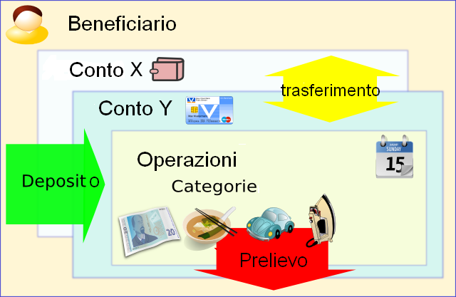

|
|
|
|
|
|
Money Manager Ex (MMEX) è un programma libero e di facile utilizzo per la gestione dei vostri soldi e delle vostre Finanaze Personali. MMEX aiuta soprattutto ad organizzare le operazioni finanziarie e tiene traccia di dove, quando e come il denaro esce ed entra.
Il primo obiettivo di MMEX è semplificare i processi di gestione finanziaria senza renderli un operazione complessa come accade con programmi di gestione finanaziaria più diffusi e conosciuti.
Pensate a Money Manager Ex come ad un registro computerizzato che vi permette di organizzare e bilanciare i vostri conti bancari, gestire e generare rendiconti, rapporti ed estratti conto delle vostre finanze.
E 'anche un ottimo mezzo per tenere aggiornati le vostre attività finanziarie.
Lo scopo di questo manuale è quello di darvi le istruzioni di base per l'utilizzo di MMEX. Questo manuale seguirà lo sviluppo del programma e quindi con esso verà costantemente aggiornato. Pertanto si consiglia di controllare regolarmente gli aggiornamento del programma per scoprire le ultime novità per una migliore fruizione di MMEX.
Mantenere organizzate le proprie finanze richiede una
certa conoscenza delle materie economiche. La gestione finanaziaria
diventa complicata quando non si ha una chiara comprensione dei flussi
finanaziari e di come questi siano influenzati da entrate ed uscite. Il
debito, generalmente è la risultante del superamento, in eccesso, dell'ammontare delle uscite rispetto alle
entrate.
Il primo
passo verso una migliore organizzazione finanziaria è mantenere in ordine i propri archivi e dati finanaziari. Solo
se si comprende come e cosa abbia generato le spese,
anche su base giornaliera, si avrà la possibilità di poterle ridurre, o quantomeno limitarle al meglio.
Vi accorgete analizzando i rendiconti che l'anno scorso avete speso 600 euro nell'acquisto di film DVD? Chiedetevi quante volte li avete utilizzati? Pensate
che ora che quei 600 € vi sarebbero tornati utili per una riparazione
di un guasto imprevisto dell'auto avvenuto giusto due giorni fa? Naturalmente non c'è una
risposta giusta o sbagliata in assoluto su come si dovrebbero spendere i
soldi. Dopo
tutto, siete voi che avete guadagnato quei soldi e il diritto di
spenderli è legato al modo di vedere le cose vostro e dei vostri
familiari, se li avete. Ma si può sempre cercare diottimizzare l'uso dei vostri soldi, cercate
di avere una miglior "ritorno" per ogni euro speso o investito
("ritorno inteso come qualità e valore di un bene acquistato, tasso di
rendimento di un titolo, ecc.").
Qui entra
in gioco questo programma di gestione finanziaria. Vi aiuta
raggruppare e suddividere i vostri dati finanziari per darvi una migliore d'insieme di quanto sta accadendo. Ricordate
sempre che l'affidabilità del programma è proprozionale alla correttezza
dei dati che inserite e che esso da solo non basta di certo a risanare delle finanaze disastrate ed in disordine. Ma
già l'aver cominciato ad utilizzare un programma di gestione
finanaziaria vi mette sulla buona strada per gestire al meglio ogni
euro guadagnato.
Continua a leggere come utilizzare Manager Ex Money.
Money Manager Ex organizza la finananza reale attraverso i concetti di operazioni.
Generalmente riceviamo denaro da qualcuno per un servizio che forniamo, o un prodotto che vendiamo. Questa è considerata come una Entrata o come un Deposito dal nostro sistema. Al contrario quando acquistiamo un prodotto o fruiamo di un servizio, il denaro che spendiamo è considerata un Uscita o Prelievo . In MMEX, le persone che danno o ricevono denaro da noi sono considerati dal sistema come Beneficiari .
Così come ci auguriamo di non spendere tutto il denaro che riceviamo a vario titolo, ovviamente abbiamo bisogno di una locazione in cui tenere il denaro. Questo generalmente è un Istituto Bancario o Finanaziario, Enti ed Istituzioni varie o le nostre tasche. MMEX etichetta queste locazioni come Conti.
Quando spendiamo o riceviamo del denaro, noi consideriamo questo come una operazione, ed il motivo di tale operazione di entrata o uscita ci viene visualizzata dalla sua categoria. Talvolta possiamo avere necessità trasferire del denaro da una parte ad un altra, come, per esempio, un prelievo Bancomat (ATM), questo tipo di operazione è chiamata trasferimento.
Tali funzionalità possono essere riassunte come illustrato nel diagramma a lato: |
 |
Un altra cosa importante da considerare è la Valuta che utilizziamo per eseguire le operazioni.
Per archiviare e tenere traccia di tutti questi dati, MMEX utilizza un Database per archiviare e mettere in relazione tra loro tutti questi dati.
Il database generato da MMEX, un file con estensione .mmb, è molto importante che lo custodiate con cura. A seconda delle circostanze potrebbe essere necessario utilizzare funzioni di sicurezza come la crittografia del database, che viene generato sotto forma di file .emb. Questa funzione permetterà d'impostare una password per il database .emb che sarà richiesta ad ogni successiva apertura.
Se crittografate il database, non perdete la password.
Come per qualsiasi altra sezione del computer, i nostri dati sono molto importanti, quindi è necessario metterli al riparo da possibili malfunzionamenti del sistema o dell'hardware o altre cancellazioni accidentali. MMEX ha un sistema di backup integrato che esegue una copia del database alla sua apertura, e, se necessario, provvede all'aggiornamento costante e giornaliero di detta copia, anche se il database è aperto più volte al giorno.
Eseguire regolarmente un backup del vostro database .mmb o .emb .
Tenere sempre una copia del backup su un supporto diverso per proteggerlo da crash di sistema o hardware.
Prima di eseguire l'aggiornamento ad una nuova versione di MMEX, assicurarsi d'aver fatto il backup del vostro database .mmb or .emb .
Al primo avvio di MMEX, il programma tenterà di caricare l'ultimo database che è stato utilizzato. Se non esiste alcun database, all'utente verrà richiesto o di aprire un database esistente (specificandone la posizione), o di crearne uno nuovo.
Se è necessario creare un nuovo database, è possibile farlo anche dal menù selezionando File-> Nuovo database.
Come prima cosa verrà richiesto di specificare un nome ed una posizione in cui salvare il vostro nuovo database (.mmb). Il
vostro nuovo database verrà ora creato e sarà visualizzata una
procedura guidata (wizard) per aiutarvi nella personalizzazione del
nuovo database, aiutandovi nella creazione del vostro primo conto
La creazione guidata del Nuovo Database richiederà di scegliere la Valuta di base in uso nei conti e un Nome Utente.
MMEX viene fornito con un set predefinito di valute che è possibile utilizzare, corrispondenti alle principali valute di internazionali. I nuovi conti potranno utilizzare una di queste Valuta Base come impostazione predefinita. Questo consente ai conti intrattenuti in nazioni diverse di convertire il loro valore nella valuta di base scelta.
Per aiutare ad identificare le finalità del database, è richiesto un Nome Utente. Questo è opzionale ed utilizzato solo come titolo nella Pagina Principale e nei rendiconti.
Entrambe queste impostazioni possono essere modificate in seguito, dal menu: Strumenti -> Opzioni
Il nome
del database sarà visualizzato nella barra del titolo aiutando a ricordare quale database è visualizzato.
Il nuovo file di database (.mmb) NON è
crittografato.
ll database può ora essere crittografato come segue: dal menu selezionare File-> Salva Database con nome...
Selezionate la posizione del file .mmb o create un nuovo database.
Cambiate nel menù a tendina del box di dialogo "Salva come:" l'estensione da File .mmb a File Crittografato .emb, e quindi cliccate su "Salva"
Immettere una password per il file - È necessaria la password quando si vorrà aprire il database.
Suggerimenti:
Ricordatevi di eseguire copie di backup dei vostri file di database .mmb o .emb
Il normale file di database non è criptato:
Questo significa che chiunque ne conosca utilizzo e contenuto, può aprire il file e leggerne i dati in esso memorizzati.
Quindi nel caso memorizzate informazioni finanziarie riservate e sensibili, che il file sia
adeguatamente custodito.
Per i file di database crittografati: ricordate la vostra password.
Quando si crea un Nuovo Database, verrà automaticamente richiesto di creare un Nuovo Conto.
Per creare manualmente un nuovo conto, dal menu, selezionare Conti-> Nuovo Conto.
Questa selezione aprirà la procedura di creazione guidata di un Nuovo Conto. La procedura guidata aiuterà ad inserire le
informazioni essenziali del Conto, Nome e Tipologia. La tipologia di conto
non sarà più modificabile, mentre il nome potrà essere
cambiato, vedi in proposito modificare le informazioni di un conto
Nome del conto: è un campo obbligatorio. Si raccomanda di scegliere un nome univoco e che abbia una relazione col conto reale. Ad esempio: per un conto corrente con un determinato Istituto Bancario invece del complicato codice IBAN o simile si può adoperare il nome dell'Istituto Bancario stesso, tipo Unicredit, Intesa, Poste, ecc.
Tipologie di Conto: MMEX attualmente supporta tre tipi di conto:
"Conto Corrente / Libretto Risparmio": Questo è il tipo più comune di conto utilizzato da MMEX, e in grado di gestire conti del tipo più comune, come i conti correnti, conti di risparmio e libretti di risparmio. Supporta tre tipi di operazioni: deposito, prelievo e trasferimento.
"Conti a Termine": analogo al conto corrente con l'eccezione che appaiono
in una loro specifica sezione della Pagina Principale e può essere visualizzato o nascosto nei giorni
di normale utilizzo. Per ulteriori spiegazione vedere l' esempio di configurazione di un conto.
Questi tipi di conti specifici conti a termine, conti di ammortamento bancario, conti
di prestito, conti ipotecari, conti di mutuo bancario o conti di investimento con reddito prestabilito. Questi conti hanno una propria sezione di bilancio nella Pagina Principale. Questo conto supporta tre
tipi di operazioni già citati.
"Conti d'Investimenti": Questo
tipo di conto consente di tenere traccia di titoli, obbligazioni,fondi
comuni d'investimento, bond, ecc. o qualsiasi altro tipo d'investimento
possiate avere.
Per una corretta gestione si deve disporre del saldo per i conti che si desidera aggiungere a MMEX. È possibile ottenere queste informazioni tramite il più recente estratto conto della banca o della carta di credito. Per tenere traccia di ulteriori informazioni sui conti, è possibile inserire i dettagli opzionali del conto, come numero di conto, piazza, sito web, informazioni di contatto e di accesso. È inoltre possibile inserire note aggiuntive sul conto nel campo 'Note'.
La maggior parte dei conti è facilmente configurabile inserendo semplicemente il saldo iniziale al momento della creazione del conto stesso. In questo caso per tenere aggiornato il saldo del conto è sufficiente aggiungere le operazioni e le transazioni che via via si effettuano oltre la data del saldo iniziale inserito.
Lo stato del conto può essere
impostato su "Aperto" o "Chiuso". I conti chiusi sono quelli
non più attivi. L'impostazione di questo stato è solo un modo per semplificare la visione d'insieme nel tuo pannello di navigazione a discesa. Per nascondere in modo permante i conti chiusi dal menù Strumenti-> Opzioni-> Visualizzazioni Vedere Suggerimenti per il Pannello di Navigazione
Valuta: Questa è
inizialmente impostata secondo la Valuta di Base scelta inizialmente al momento della creazione del
database. Y ou can set the currency that is associated
with this account and can be different to the base currency. ou Y può impostare la
valuta che è associato a questo account e può essere diverso per la valuta di
base. Il tasso di
cambio della valuta può essere modificato utilizzando il menu: Strumenti
->Gestione Valuta
Esempio: Vivete Italia ed utilizzate gli Euro, ma avete anche un conto bancario negli Stati Uniti in dollari USA. La maggior parte dei vostri conti sono quindi in Euro. Qual'è il valore reale del vostro conto bancario statunitense? Cambiando o aggiornando il tasso di cambio Euro-Dollaro, è possibile ottenere il valore corretto del vostro conto.
È anche possibile contrassegnare i conti come 'Preferiti'. Questo viene utilizzato per modificare l'elenco dei conti che sono
visibili nel pannello di navigazione. Vedere Suggerimenti per il Pannello di Navigazione
Suggerimenti:
Utilizzate l'icona presente sulla toolbar per una rapida selezione di 'configurazione guidata per l'aggiunta di un nuovo conto'.
Abbiamo
un Conto di Deposito Postale con 1.250 €, un Conto Corrente Unicredit
con 500 €, una MasterCard con un debito di 250 €, una Carta Si con un
debito di 475 €, un Mutuo Ipotecario per la Casa di 230.965 € e un
conto di risparmio (in questo esempio Conto Arancio) di 5.000 €.
Imposteremo i conti come segue:
|
Tipo di Conto |
Nome Conto |
Saldo Iniziale |
|
Conto Corrente o Libretto di Risparmio |
Libretto Postale |
€ 1.250,00 |
|
|
Unicredit |
€ 500,00 |
|
|
MasterCard |
€ -250,00 |
|
|
Carta Si |
€ -475,00 |
|
Conto a Termine |
Mutuo Casa |
€ -230.965,00 |
|
|
Conto Arancio |
€ 5.000,00 |
Nella Pagina Principale il saldo sarà di € 1.025 per i Conti Bancari, e di € -225.965 per i Conti a Termine
Quando si effettua un pagamento dal Conto Corrente alla Carta Mastercard tramite un Trasferimento di denaro il saldo generale nella Pagina Principale rimarrà uguale. Quando viene eseguito un pagamento dal Conto Corrente o Libretto di Risparmio al Mutuo Casa, il saldo nella Pagina Principale rifletterà il pagamento avvenuto. Così è possibile determinare l'ammontare dei propri averi giorno per giorno. I pagamenti regolari con scadenze fisse come appunto la rata del Mutuo Casa, possono anche essere impostati utilizzando la funzione Operazioni Ricorrenti.
Avendo molti conti sia il Riquado di Navigazione che la Pagina Principale possono diventare molto grandi e affollate di dati.
Per questo motivo le Opzione di visualizzazione possono essere
temporaneamente modificata per mostrare o nascondere le varie sezione:
|
Pannello di Navigazione: |
Espande o Riduce le sezioni dei Conti Bancari e Termine utilizzando +/- nel Pannello di Navigazione. |
|
Pagina Principale: |
Utilizzando il menù: Visualizza -> Conti Bancari o menù: Visualizza -> Conti a Termine |
Utilizzando click destro del mouse su::
Conti Bancari nel Pannello di Navigazione, permetterà di visualizzare tutti i conti o solo quelli preferiti, di modificare temporaneamente le impostazioni permanenti ed ulteriori opzioni.
Su qualsisi Conto Bancario o a Termine per accedere ad ulteriori opzioni.
Per rendere permanenti le modifiche, bisogna modificare le opzioni utilizzando il menu: Strumenti -> Opzioni -> Opzioni di visualizzazione
Una volta creato un conto, potete modificare uno qualsiasi dei campi del conto nei seguenti modi:
Utilizzando il menù Conti –> Modifica Conto
Verrà visualizzato l'elenco dei conti da cui selezionare quello desiderato.
Selezionando il conto dal Pannello di Navigazione
Click sinistro sopra il conto scelto aprirà un menù pop-up quindi scegliere "Modifica conto"
Questo aprirà una finestra di dialogo con le informazioni del conto da cui modificare i campi desiderati
Modicare dei dettagli del conto
Quindi premere "OK" per salvare le modifiche effettuate.
Una volta
creato un nuovo
conto, potete cominciare ad immettere le operazioni. Scegliete un conto dal Pannello di Navigazione. Il conto verrà visualizzato nella finestra principale e sarà quindi possibile inserire nuove operazioni:
Dal pannello di navigazione, selezionando il conto desiderato.
Una volta visualizzato il conto in cui desidera effettuare delle operazioni, per creare una nuova
operazione, fare click sul pulsante "Nuova" per aprire la maschera di immissione. Immettere i dettagli associati a questa operazione. Scegliere il tipo di
operazione tra "Pagamento", "Deposito" o "Trasferimento". Quindi sceglie il beneficiario, la categoria, la data
dell’operazione, l’eventuale numero d'operazione, inserire eventuali note e
quindi l'importo dell’operazione. Infine, premere il pulsante "OK" per salvare.
Seguono una serie di note sui campi relativi alla finestra di dialogo delle operazioni.
Prelievo: è, ad esempio, un pagamento ed è una Uscita.
Deposito: è un qualsiasi ricevimento di denaro ed è una Entrata.
Trasferimento: è un prelievo fatto da un conto e depositato in un altro, ad esempio un bonifico.
Questo tipo d'operazione non è inclusa nel calcolo Entrate/Uscite.
Scegliendo Trasferimento si
attiva il pulsante Avanzate.
Utilizzato per l'iserimento di ulteriori opzioni, come, ad esempio,
quando l'importo prelevato dal conto di provenienza ("Da"), deve essere
diverso dall'importo risultante sul conto di destinazione ("A") e
viceversa.
Quando questa funzione è in uso viene visualizzato il messaggio "attivo!" accanto al punsante "Avanzate".
Beneficiario: E' il soggetto tramite cui il denaro entra o esce nelle vostre operazioni.
Clicando sul pulsante “Beneficiario” si apre la maschera di dialogo dei
beneficiari. Attraverso questa maschera di dialogo è possibile scegliere un beneficiario tra quelli già presenti nell'elenco o crearne uno
nuovo.
Nota del traduttore: In Inglese il termine 'Payee' ha sia il significato di 'Beneficiario' che di 'Debitore' o 'Pagatore' ed in questo duplice significato il termine è usato in MMEX. Per motivi tecnici legati alla lunghezza del termine inseribile nella traduzione, ho dovuto tradurlo semplicemente come Beneficiario, intendendo con tale termine l'attore dell'operazione relativa, sia in entrata che in uscita di denaro.
Categoria: Tramite la scelta della categoria è possibile determinare la tipologia di spesa o introito dell'operazione.
Cliccando sul pulsante “Categoria” si apre la maschera di dialogo delle categorie. Attraverso questa maschera di dialogo potete scegliere unaa categoria tra quelle esistenti nell'elenco oppure crearne una nuova.
Numero dell'Operazione: questo campo è facoltativo e può essere utilizzato per immettere un numero da
associare ad un assegno o all’operazione come numero di
controllo.
Stato dell'Operazione: In questo campo è possibile scegliere tra "Non Riconciliata",
"Riconciliata", "Nulla" o "da Monitorare". Queste voci contrassegnano i
diversi stati delle operazioni.
Non Riconciliata: Quando si immettete un’operazione, lo stato iniziale è “Non riconciliata”. Questo significa che l’operazione non è stata verificata con il saldo o l’estratto conto della banca, della società emittente la carta di credito, ecc.
Riconciliata: Una volta che l’operazione è stata controllata e verificata con il saldo della banca o della società emittente la carta di credito, può essere contrassegnata come "Riconciliata".
Nulla: Se avete immesso un’operazione diventata successivamente non valida (ad esempio un assegno risultato scoperto) oppure se avete annullato un’operazione, anziché eliminare l’operazione potete contrassegnarla come “Nulla”, cosicché rimane traccia dell’operazione ma non rientrerà nel conteggio finale del saldo.
Da Monitorare: Questo stato indica operazioni che hanno bisogno di un’ulteriore controllo o verifica. Ad esempio, se ricevete l’estratto conto dalla banca e vi accorgete che l'importo dell’operazione che avete registrato su MMEX è diverso da quello presente nell’estratto conto della banca, potete contrassegnarla come “da Monitorare” in modo da poterla verificare in seguito presso la banca.
La modifica di un operazione già esistente può essere effuatta in diversi modi:
selezionando l'operazione e quindi cliccando sul pulsante 'Modifica' in fondo alla schermata.
facendo doppio-click sull'operazione stessa.
premendo il tasto 'Invio' quando l'operazione è evidenziata dalla selezione.
Ognuna di queste azioni aprirà la finestra di dialogo contenente i dettagli dell'operazione selezionata. Una volta effettuate le modifiche desiderate cliccare su OK per salvare i cambiamenti apportati.
Il pulsante “Avanzate”
E' attivo quando è in uso un operazione di trasferimento.
Il messaggio "attivo!" è visualizzato per indicare la presenza di informazioni Avanzata.
Questo è visualizzato accanto al pulsante Avanzate quando i campi importo (in Avanzate) sono differenti tra il conto di provenienza e quello di destinazione.
Le operazioni inserite in MMEX sono inizialmente considerate “Non Riconciliate”. Questo significa che non sono state verificate con il saldo o un estratto conto della banca. Una volta verificata l'operazione con l'etratto conto della banca, oppure controllando le operazioni sul tramite il servizio on-line della banca, se i dettagli dell’operazione registrata su MMEX corrispondono a quelli dell’istituto bancario o finanziario, l’operazione può essere contrassegnata come “Riconciliata”. Attraverso tali contrassegni delle operazioni potete tenere traccia delle operazioni immesse che hanno avuto riscontro con le operazioni effettivamente registrate ed approvate dalla banca. In MMEX, le operazioni Riconciliate e non Riconciliate sono contraddistinte da icone diverse.
Suggerimento: per contrassegnare un'operazione come Riconciliata, basta selezionare l'operazione e premere il tasto 'r' o 'R'. Per contrassegnare una transazione come non Riconciliata, è sufficiente selezionare l'operazione e premere l'u' o 'U'.
Alcune operazioni potrebbero avere informazioni o dettagli che volete seguire o ricontrollare. Queste operazioni possono essere
contrassegnate come “da Monitorare”. Questo contrassegno è indicato in MMEX con
un ulteriore icona diversa da quelle degli altri stati.
Suggerimento:
Per contrassegnare una transazione da Monitorare, è sufficiente selezionare l'operazione e premere il tasto 'f' o 'F'.
Dal momento che
MMEX può essere utilizzato in tante differenti Nazioni, MMEX ha preso
in considerazione diverse valute per le differenti Nazioni degli
utenti. When creating a new database, la Valuta Base sarà
la valuta locale della Nazione dell'utente. Se la valuta locale
dell'utente non è presente nell'elenco delle valute predefinite,
l'utente può aggiungere una o più valute o creare un proprio elenco
personalizzato delle valute.
MMEX se necessario permette di utilizzare più
di una valuta, quando ciò accade un riepilogo delle valute in uso viene
visualizzato nella Pagina Principale di Riepilogo.
E' possibile gestire le Valute utilizzando la vove del menù: Strumenti -> Gestione Valute.
Per aggiungere una nuova valuta:
Utilizzare il pulsante Aggiungi nella maschera di dialogo delle Valute
Inserire un nome adatta per la nuova valuta.
Nota: Questo nome non può essere modificato in seguito, ma la valuta può essere eliminata se non utilizzata da nessun conto.
Aggiornare o correggere il valore della valuta dal menù Gestione Valute.
L'opzione Gestione Valute è disponibile anche quando si modifica una valuta.
Utilizzare il pulsante Aggiorna per salvare i cambiamenti prima di chiudere la schermata.
Nota: Tutti i cambiamenti andranno persi se non si preme il pulsante Aggiorna prima di chiudere.
Quando sono utilizzate più di una Valuta, il Tasso di Conversione Base va impostato al fine di consentire che i valori delle altre valute riflettano correttamente la proporzione con la valuta base.
L'utilizzo della voce di menù: Strumenti –> Aggiorna i Tassi di Cambio delle Valute online, necessita delle seguenti impostazioni:
Attivare l'opzione dalla finestra di dialogo Strumenti –> Opzioni... Altro.
Impostare tutti i Simboli delle Valute che desiderate aggionare online.
Impostare su 1 il valore della Valuta Base.
Suggerimento:
Utilizzare l'icona raffigurante il
simbolo del dollaro nella barra degli strumenti per una rapida
selezione della maschera di dialogo per la Gestione delle Valute
Utilizzare i tasti Su e Giù per muoversi tra le valute da selezionare.
Le Categorie indicano la causa per cui si è verificata un Uscita o per cui si è ricevuta un Entrata.
Esempio: Se si vuole memorizzare la spesa fatta per la riparazione dell'auto, bisognerebbe impostare 'Auto' come Categoria e 'Manutenzione' come Sottocategoria.
È possibile
gestire le categorie aprendo il menù Strumenti -> Gestione Categorie.
Una volta aperta la maschera di dialogo potete
aggiungere o modificare nuove Categorie e Sottocategorie.
Per aggiungere una nuova Categoria:
Strumenti-> Gestione Categorie nel box dialogo appena aperto selezionare Categorie (prima voce in alto nell'elenco),
Digitare il nome di una nuova Categoria nel campo testo in basso
Cliccare sul pulsate Aggiungi per salvare
La nuova Categoria verrà visualizzata in basso
sotto le altre, mentre sarà visualizzata in ordine alfabetico alla
successiva apertura dell'elenco
Per aggiungere una nuova Sottocategoria:
Sempre da Gestione Categorie selezionare quella a cui si vuole aggiungere la Sottocategoria
Digitare il nome di una nuova Sottocategoria nel campo testo in basso
Cliccare sul pulsate Aggiungi per salvare
E' anche possibile cambiare il nome di
categorie e sottocategorie selezionandole nell'elenco, quindi
modificarne il nome che appare nel campo d'inserimento del testo e
premere il pulsante Modifica. Allo stesso modo è possibile cancellare
categorie e sottocategorie.
Nota: Non è possibile cancellare categorie e sottocategorie già in uso in una o più operazioni.
Per poter cancellare una categoria o sottocategoria in uso, utilizzare uno dei seguenti metodi:
Modificare l'operazione che la utilizza cambiando categoria o sottocategoria
Eliminare l'operazione che utilizzano la categoria o sottocategoria che si desidera cancellare
Utilizzando la voce del menù: Strumenti –> Sostituzione di -> Categoria, con cui è possibile riassegnare la Categoria contemporaneamente a tutte le operazioni che hanno in uso una determinata categoria e/o sottocategoria.
Questo permetterà di poter cancellare categorie e sottocategorie precedentemente bloccate perchè già in uso.
Suggerimento:
Utilizzare le icone nella toolbar per una rapida selezione di Gestione Categorie
Utilizzare i tasti Su e Giù per muoversi e selezionare le voci all'interno dell'elenco.
I Beneficiari sono le persone fisiche, le
società, gli enti, le istituzioni, ecc. da cui riceviamo a vario titolo
del denaro o a cui versiamo dei pagamenti in cambio di beni e servizi. (vedi "Nota del traduttore" nella sezione: Creare una Nuova Operazione)
E' possibile gestire i Beneficiari dal menù: Strumenti –> Gestione Beneficiari.
Nella finestra di dialogo che si aprirà sarà possibile aggiungere nuovi Beneficiari, modificare o cancellare quelli esistenti.
Per aggiungere un nuovo Beneficiario:
Strumenti-> Gestione Beneficiari per aprire la finestra di dialogo, in alternativa si può utilizzare il Filtro e selezionare beneficiari
Nella finestra di dialogo digitare il nome del nuovo Beneficiario nel campo testo in basso
Cliccare sul pulsate Aggiungi per salvare
E' possibile anche selezionare un beneficiario nella lista e poi utilizzare i pulsanti Modifica o Elimina per ottenere l'azione corrispondente.
Nota: Come per le Categorie non è possibile cancellare beneficiari già in uso in una o più operazioni.
Per poter cancellare un beneficiario in uso, utilizzare uno dei seguenti metodi:
Modificare l'operazione che lo utilizza scegliendo un altro beneficiario
Eliminare le operazioni che utilizzano il beneficiario che si desidera cancellare
Utilizzando la voce del menù: Strumenti
–> Sostituzione di -> Beneficiario,
con cui è possibile riassegnare il Beneficiario contemporaneamente a tutte
le operazioni che hanno in uso un determinato beneficiario.
Questo permetterà di poter cancellare un beneficiario precedentemente bloccato perchè già in uso.
Suggerimento:
Utilizzare l'icona nella toolbar per una rapida selezione di Gestione Beneficiari
Utilizzare i tasti Su e Giù per muoversi e selezionare le voci all'interno dell'elenco dei beneficiari.
Utilizzare % come carattere jolly nella finestra di dialogo Filtro.
Utilizzare _ per indicare un singolo carattere nella finestra di dialogo Filtro.
MMEX può importare un'ampia varietà di formati, uno di questi è il formato fisso CSV che MMEX è anche in grado di esportare. Questo è
molto utile per spostare dati da un file di database .mmb a un altro file di
database .mmb.
Per osservare e controllare
un file CSV, un modo semplice è quello di esportare un conto in un file
CSV pere poi analizzarne il contenuto e testarne l'efficacia.
Generalmente i formati dei dati in esso contenuti sono i
seguenti:
Data - Data dell'operazione (visualizzato nel
formato scelto in Opzioni-> Formato Data)
Beneficiario - il soggetto dell'operazione. Nel caso di un'operazione di
trasferimento, questo indica il nome del conto 'da cui' o 'a cui' è stato effettuato il
trasferimento.
Tipo di operazione - Questa può essere
"Prelievo" o "Deposito"
Importo - l'importo dell'operazione
Categoria - La
categoria dell'operazione
Sottocategoria - La sottocategoria dell'operazione
se presente (altrimenti è vuoto)
Numero - Numero dell'operazione
Note - Note dell'operazione
Notare che le operazioni contenute in un file CSV possono essere importate solo in un singolo conto di MMEX.
I file QIF (Quicken Interchange Format) è un formato specifico per la
lettura e la scrittura di dati finanziari su di un supporto (ad es.: un
file). Un file QIF in genere ha la seguente struttura:
!Type:tipo di stringa d'identificazione
[linea di codice con carattere singolo]Stringa Letterale di Dati
...
^
[linea di codice con carattere singolo]Stringa Letterale di Dati
...
^
Ogni serie di dati termina con ^ (accento circonflesso).
Vedere esempio do operazione QIF
!Tipo:Banca
D6/ 1/94 Data
T-1,000.00 Importo
N1005 numero
PBanca emittente mutuo ipotecario
^
Fine dell'operazione
Il formato QIF è più vecchio del formato OFX (Open Financial Exchange). L'incapacità di riconciliare le operazioni importate contro le informazioni corrente del conto è una delle
carenze principali di QIF. Esso è comunemente utilizzato dagli
istituti finanziari per fornire informazioni scaricabili dai titolari
dei conti.
MMEX può importare operazioni in un conto da uno specifico tipo di formato.
Le tipologie sono le seguenti: (È possibile trovare il tipo di QIF
aprendolo in un editor di testo)
!Type:Bank conto delle operazioni di Banca
!Type:Cash conto delle
operazioni con Contanti
!Type:CCard conto delle operazioni con Carta di Credito
Nota Importante (1): L'impostazione del
formato della data scelta da Opzioni di MMEX, deve corrispondere a quella del formato della data nel file QIF,
altrimenti lettura del file di MMEX sarà errata e si tradurrà in operazioni aventi
date non corrette.
Nota Importante (2):
Dopo averle importate dal file QIF, tutte le operazioni avranno lo Stato
"Da Monitorare". E' possibile contrassegnare tutte le operazioni con
questo stato tramite il comando d'impostazione stato utilizzando
click destro del mouse sulla visualizzazione del conto.
MMEX può anche importare da file CSV esportati tramite il Money Manager.NET del programma. Lo scopo è soprattutto quello di aiutare gli utenti nella migrazione verso l'utilizzo di MMEX.
Il generale il formato è il
seguente:
Data - Data dell'operazione (visualizzata nel
formato specificato in Opzioni-> Formato Data)
Beneficiario - il soggetto dell'operazione. Nel caso di un'operazione di
trasferimento, questo indica il nome del conto 'da cui' o 'a cui' è stato effettuato il
trasferimento.
Importo - l'importo dell'operazione. Se è positivo, è considerato un deposito, se è negativo un prelievo
Numero - Numero dell'operazione
Stato - Lo stato
dell'operazione
Categoria - La
categoria dell'operazione. Questa attualmente è la stringa composta da "Categoria: Sottocategoria"
Note - Note dell'operazione
Notare che le operazioni contenute in un file CSV possono essere importate solo in un singolo conto di MMEX.
Per agevolare gli utenti che avevano il problema di conversione dei file CSV delle loro operazioni bancarie nel formato richiesto da
MMEX, MMEX permette agli utenti di importare i file CSV scegliendo la corrispondenza di tutti i campi presenti nel file CSV. Per utilizzare
questo importatore, selezionare il conto da importare e quindi selezionare
l'ordine dei campi nel file CSV scegliendo dalla lista dei campi disponibili. MMEX importarà il file CSV utilizzando le informazioni sul
formato specificate dall'utente. MMEX può importare da un'ampia varietà
di formati. Uno di questi è il formato di file CSV generico o universale. Questo formato di file corrisponde
esattamente al formato CSV che MMEX può esportare. Questo è
utile per spostare i dati da un file di database .mmb ad un altro file di database con la medesima estensione .mmb.
Per
una più semplice comprensione si può provare ad esportare un
qualsiasi conto in un file CSV per poi analizzare nel dettaglio il
formato di file creato.
Le opzioni dei campi CSV sono le
seguenti:
Data - Data della transazione (nel formato
scelto in Opzioni-> Formato data)
Beneficiario - Colui che fa o riceve l'operazione. Nel caso di un'operazione di
trasferimento, questo indica il nome del conto 'da cui' o 'a cui' è stato effettuato il
trasferimento.
Importo (+/-)
- L'importo dell'operazione. Se si
tratta di un valore positivo, è un deposito, se il valore negativo è un prelievo.
Categoria - La
categoria dell'operazione
Sottocategoria - La
sottocategoria dell'operazione
Note - Note dell'operazione
Numero - Numero dell'operazione
Prelievo - Un importo negativo è considerato un prelievo. (Non utilizzare se specificato in Importo (+/-))
Deposito - Un importo positivo è considerato un deposito. (Non utilizzare se specificato in Importo (+/-))
Ignora - Ignorare questo campo
Notare che le operazioni contenute in un file CSV possono essere importate solo in un singolo conto di MMEX.
Nota Importante (1): L'impostazione del
formato della data scelta da Opzioni di MMEX, deve corrispondere a quella del formato della data nel file CSV,
altrimenti lettura del file di MMEX sarà errata e si tradurrà in operazioni aventi
date non corrette.
Nota Importante (2):
Dopo averle importate dal file CSV, tutte le operazioni avranno lo Stato
"Da Monitorare". E' possibile contrassegnare tutte le operazioni con
questo stato tramite il comando d'impostazione stato utilizzando click
destro del mouse sulla visualizzazione del conto.
Quando si crea un file CSV bisogna assicurarsi di eliminare le virgole da depositi e prelievi. Questo può essere fatto facilmente attraverso un programma come Excel o OpenOffice.
Oppure si può cambiare il Separatore utilizzato da MMEX dal menù Strumenti->Opzioni quindi nella scheda "Generale" cambiare il Separatore di Campo in "Impostazioni per Importazione/Esportazione dati".
Non è necessario inserire i saldi nel file CSV.
Si noti che le operazioni da un file CSV possono essere importate in unico conto di MMEX.
MMEX può esportare in file CSV fisso.
Questo formato di file corrisponde
esattamente al formato CSV che MMEX può importare. Questo permette di spostare facilmente dati da un database .mmb all'altro. Il modo più semplice per vedere come e quali dati sono esportati da MMEX nel
formato di file CSV, è provare l'esportazione di un conto in un
file CSV e poi analizzarne i dati contenuti.
Il formato generale è il seguente:
Data - Data della transazione (nel formato
scelto in Opzioni-> Formato data)
Beneficiario - Colui che fa o riceve l'operazione. Nel caso di un'operazione di
trasferimento, questo indica il nome del conto 'da cui' o 'a cui' è stato effettuato il
trasferimento.
Tipo Operazione - Questa può essere
"Prelievo" o "Deposito"
Importo - L'ammontare della operazione come valore positivo
Categoria - La
categoria dell'operazione
Sottocategoria - La
sottocategoria dell'operazione (se presente, altrimenti lasciare in bianco)
Note - Note dell'operazione
Si noti che le operazioni di un conto devono essere esportate in un singolo file CSV.
MMEX può esportare un conto in un formato di file QIF.
Questo formato può essere utilizzato in MMEX anche per per caricare un conto.
Attenzione: Sebbene le operazioni di Trasferimento saranno ricaricate in un singolo conto, non funzioneranno correttamente.
Quando si hanno delle operazioni che si
verificano a scadenze od intervalli regolari, come il pagamento delle
bollette o il versamento dello stipendio, MMEX consente di impostare
tali operazioni come Ricorrenti.
Queste operazioni:
Verranno visualizzate a partire da 14 giorni prima della scadenza nella Pagina Principale alla voce "Operazioni Imminenti".
Potranno essere impostate per l'esecuzione automatica alla scadenza.
Potranno essere impostate per l'esecuzione con il consenso dell'utente
Vi si può accedere da Operazioni Ricorrenti dal pannello di navigazione.
Per creare nuove operazioni, utilizzare il pulsante Nuova.
Specificare il conto d'origine.
Il procedimento è simile alla creazione di un nuovo conto tranne nel punto in cui bisogns collegare l'operazione ad un conto. Questo perchè per tali operazioni è necessario conoscere il conto di destinazione.
impostare la data Nuova Scadenza ad una data futura
impostare la Cadenza come “giornaliera”, “settimanale” ecc.
Numero di Operazioni:
-
inserire il numero delle volte che l'operazione si ripeterà.
- il campo lasciato in bianco significa che l'operazione si ripete a tempo indefinito.
Queste operazioni saranno visualizzate come: Operazioni Imminenti nella Pagina Principale da 14 giorni prima della scadenza.
Note:
Quando l'operazione diverrà attiva, alla data impostata, se necessario potremo cambiare o modificare importo, beneficiario, categoria, stato e data.
Inserendo un'operazione prima della sua scadenza, nel conto associato sarà di colore grigio, fino al giorno in cui diverrà attivawill gray out the transaction in the associated account until the day it becomes active.
Nell'utilizzo del Rendiconto Flusso di Cassa dovremo impostare le Operazioni Ricorrenti.
MMEX ti permette di tenere traccia di beni mobili ed immobili come automobili, case, terreni e altre proprietà. Ogni bene ha un valore che annualmente, secondo un certo tasso, si potrà rivalutare, svalutare o mantenere il suo valore inalterato. Il valore totale dei beni si aggiungerà al valore totale delle vostre finanze.
MMEX permette di eseguire ricerche di operazioni secondo determinati criteri. Questo si ottiene utilizzando le opzioni del filtro per la ricerca delle operazioni. La lista delle operazioni risultante può essere stampato o salvata come file HTML.
MMEX consente di impostare un bilancio annuale
previsto da confrontare poi con il tuo bilancio reale. Per impostare un
bilancio cliccare sulla voce 'Budget' e aggiungere un bilancio annuale.
Una volta aggiunto il bilancio, selezionare l'anno per
modificare, se necessario, gli importi per ciascuna categoria. Questo diventa il
bilancio previsto per l'anno in corso.
Utilizzando i rendiconti dei 'Budget', è possibile confrontare spese ed
entrate avendo come termine di paragone il bilancio dell'anno in corso.
MMEX consente di creare diversi tipi di rendiconti.
Tutti i rendiconti possono essere stampati dal menù: File->Stampa... ->Vista Attuale.
Selezionare la voce desiderata sotto "Rendiconti" dal Pannello di Navigazione. Alcuni rendiconti richiedono inserimenti da parte dell'utente, altri no, tutti comunque sono stampabile dall'apposito menù.
Rendiconto anno finanaziario: (adatto a varie nazioni)
Talvolta l'inizio questi rendiconti non
corrisponde con l'inizio dell'anno solare, e appaiono come rami di un
rendiconto principale. Questi rendiconti coprono:
Anno Finanaziario Precedente
Anno Finanziario Attuale
Per impostazione predefinita la data di inizio dell'anno finanziario è fissata al 1° luglio dell'anno.
La data di inizio dell'anno finanziario può essere modificata dall'utente con qualsiasi giorno di qualsiasi mese, entro un periodo di 12 mesi. Per modificare la data d'inizio utilizzare il menu Strumenti->Opzioni e selezionare il riquadro Altro.
Permette all'utente di generare rendiconti specifici con specifiche criteri di selezione.
Utilizzare Filtro operazioni.
Per funzionare correttamente le Operazione Ricorrenti devono essere impostate nei vari conti. Il rendiconto utilizzerà le Operazioni Ricorrenti dei diversi conti, per visualizzare la previsione dell'ammontare di denaro che sarà disponibile per i 12 mesi successivi sulla base delle operazioni previste.
MMEX supporta la stampa di tutti i rendiconti generati e visualizzati.
Le opzioni di Stampa sono disponibili dall'apposito menù, File->Stampa... Vista Attuale
Racommandazioni:
Utilizzare la schermata delle opzioni di stampa per formattare la pagina se necessario
Utilizzare l'Anteprima di Stampa per controllare il formato del rendiconto prima di stamparlo.
|
Generale |
|
|
Valuta Base: |
Questa
funzione imposta la Valuta Base del database. Ogni conto la utilizzerà
come valuta predefinita, ma se necessario può essere cambiata con
una diversa. |
|
Formato Data: |
La scelta del formato della data serve per impostare come deve essere visualizzata la data nel programma e nei rendiconti o durante l'importazione dai file QIF e CSV. |
|
Separatore CSV: |
E' utilizzato come carattere di separazione tra campi durante la creazione di file CSV. Questo è utile per cambiare la predefinita ',' (virgola) con '.' (punto) per indicare i decimali negli importi delle valute. |
|
Nome Utente |
Opzionale - E' utilizzato solo come titolo della Pagina Principale e sui rendiconti. |
|
Lingua |
Questo campo visualizza la lingua scelta per l'interfaccia di MMEX. Cambiando lingua potrebbe essere necessario riavviare il programma affinché siano caricati tutti gli elementi della nuova lingua selezionata. |
|
Visualizzazione |
|
|
Conti Visibili |
Per impostare i conti visibili nel Pannello di Navigazione, a secondo dello stato. |
|
Visualizzazione Operazioni |
Determina quali operazioni saranno visibili nella schermata di visualizzazione del conto |
|
Dimensione Carattere |
Per impostare le dimensioni dei caratteri adoperati nella Pagina Principale e nei Rendiconti. |
|
Navigazione: |
Per impostare quali tipi di conti espandere quando la schermata del Pannello di Navigazione viene aggiornata. |
|
Pagina Principale: |
Per impostare quali tipi di conti espandere quando la schermata del Pagina Principale viene aggiornata. |
|
|
|
|
Colori |
Permette all'utente di modificare i colori di MMEX secondo il proprio stile. |
|
Altro |
|
|
Impostazione Anno Finanaziario |
Per impostare il Giorno ed il Mese d'inizio per i rendiconti dell'Anno Finanaziario. |
|
Impostazioni Nuove Operazioni |
Per modificare le impostazioni predefinite nella mascherra di dialogo per la modifica o la creazione di Nuove Operazioni |
|
Backup Database |
Per impostare le modalità d'esecuzione del backup all'avvio di MMEX.
|
|
Pagina Web Quotazioni Titoli |
Questo URL è usato dal pulsante Aggiorna nella pagina dei Titoli Questo URL è usato per la schermata di modifica o creazione di nuovi titoli, per aprire la pagina web dei titoli in elenco. |
|
Usa la data originale... |
Abilitata questa opzione farà utilizzare al programma la data originale durante il Copia-Incolla di un'operazione, nella schermata del conto. |
|
Suono Operazione |
Abilita l'associazione con un suono quando si inserisce un operazione. |
|
Aggiorna Valute... |
Abilitata questa opzione consente di aggiornare le valute via internet. |
Il formato di file .mmb è esclusivo? E i miei dati sono al sicuro?
Come posso essere certo che MMEX non stia tentando di accedere ai miei dati finanaziari?
Puoi dare il tuo contributo allo sviluppo del programma nei seguenti modi:
Se sei contento di MMEX trovandolo utile per la gestione delle tue finanze, puoi effettuare una donazione al progetto MMEX.
Torna all'inizio |
Torna a Domande Frequenti
|
Originariamente ho
sviluppato un programma di finanza personale chiamato Money Manager. Era scritto in
.NET più
come esercizio di studio che come lo sviluppo di un software. Con il
tempo è diventato inadeguato rispetto al progetto originale. Quindi ho
“congelato” il vecchio programma ed è ho iniziato il lavoro per una
nuova versione con caratteristiche e interfaccia simile alla versione
precedente, ma scritto in C++.
Torna all'inizio |
Torna a Domande Frequenti
|
|
No |
il formato di file .mmb non è esclusivo |
|
|
MMEX usa un database SQLite per memorizzare i dati. Questo vuol dire che il file .mmb è come un normale database SQLite. SQLite è uno dei più piccoli sistemi di database gratuito disponibile, e ci sono moltissimi strumenti in grado di aprire ed accedere ai database SQLite. SQLiteSpy e SQLite Browser sono due di questi strumenti (http://sqlitebrowser.sourceforge.net/). Una volta aperto il database con uno di questi strumenti, è possibile fare qualsiasi cosa si desideri con i dati. |
|
Si |
I tuoi dati sono sicuri |
|
|
I dati sono contenuti sul tuo PC, (o Chiavetta USB se lo adoperi come portabile). Per proteggere ulteriormente i tuoi dati puoi crittografare il database. Questo permette di criptare il database aggiungendo una password, così che il database potrà essere aperto da MMEX o altro programma solo se si conosce la password corretta. |
Torna all'inizio |
Torna a Domande Frequenti
|
MMEX è un applicazione portabile, questo significa che può funzionare sensa installazione, per esempio, da una chiavetta USB. Se MMEX trova il file mmexini.db3 nella sua cartella, si avvierà in modalità portabile. Copia i file di mmex in una cartella di una chiavetta USB, poi copia il file mmexini.db3 nella stessa cartella.
Come rendere MMEX portabile:
In ambiente Windows (supposto che F:\ è una chiavetta USB)
Copia "C:\Programmi\MoneyManagerEx" to F:\
Copia
"%APPDATA%\MoneyManagerEx\mmexini.db3" su
F:\MoneyManagerEx
Copia il tuo file di database in una cartella su F:\
In ambiente Unix (supposto che /media/disk sia una chiavetta USB inserita)
Compila mmex dal suo file sorgente normalmente,
poi fai installare prefix=/media/disk
cp ~/.mmex/mmexini.db3 /media/disk/mmex/share/mmex
o se vuoi copia mmex già installato in /usr
cp
/usr/bin/mmex /media/disk/mmex/bin
cp /usr/share/mmex /media/disk/mmex/share
cp /usr/share/doc/mmex /media/disk/mmex/share/doc
cp ~/.mmex/mmexini.db3
/media/disk/mmex/share/mmex
Torna all'inizio |
Torna a Domande Frequenti
|
Generamente con qualsiasi
programma con codice chiuso (closed source), in materia di sicurezza
dei dati, ci si deve fidare di quanto afferma il produttore del
software. Invece con MMEX essendo un codice aperto (open source), è
possibile verificare personalmente le affermazioni fatte da chi ha
scritto il programma. Anche se non si è un esperto di C++, è certo che
chiunque può accedere al codice sorgente in qualsiasi momento
e verificare la legittimità delle intenzioni di MMEX. Inoltre MMEX non
si connette a Internet a meno che non esplicitamente richiesto
dall'utente (come per il controllo degli aggiornamenti, aggiornamento
quotazioni azionarie, ecc).
Torna all'inizio |
Torna a Domande Frequenti
|
Per stampare un Estratto Conto con le operazione scelte secondo uno specifico criterio, basta utilizzare il Filtro Operazioni per selezionare quali visualizzare e quindi stampare dal menù File ->Stampa...->Vista attuale
Il Filtro Operazioni è accessibile da Rendiconti-->Rendiconto Operazioni nel pannello di navigazione, o cliccando sull'icona a forma d'imbuto posta nella barra sotto ai menù in alto a sinistra.
Torna all'inizio |
Torna a Domande Frequenti
|